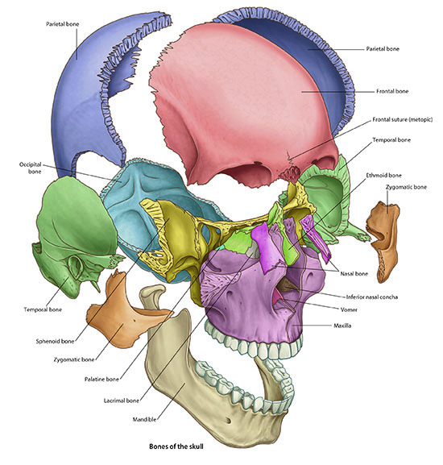

Neurology Lab 4 - Module 1 - Skull and Dura: Page 4 of 5
×
Next, position the head anteriorly and inferiorly to expose the frontal and nasal bones to an appropriate view for the next steps.

Using the Dissect tool, remove the frontal and nasal bones to get a better view of the ethmoid and sphenoid bones.(Hint: Use the Anatomy icon to search for both bones and highlight those bones.)